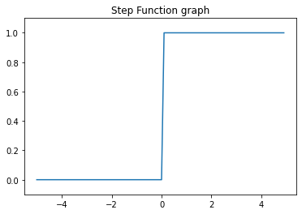
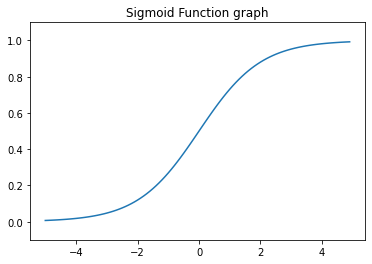
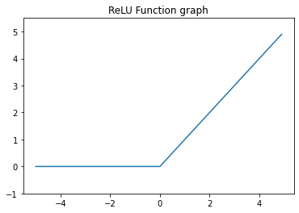
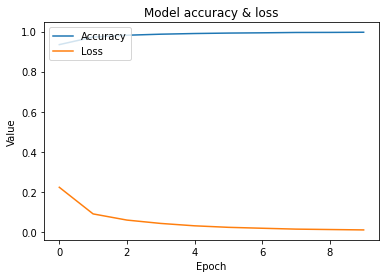

이번 글에서는 밑바닥부터 시작하는 딥러닝1 책의 3강에 대한 리뷰를 시작합니다.
앞서 딥러닝의 기초 개념인 퍼셉트론을 학습했는데, 이어서 딥러닝의 중요한 개념인 신경망에 대해 학습합니다.
퍼셉트론과 달리 신경망이 어떻게 동작하는지, 그리고 활성화 함수는 무엇인지 등에 대해서도 배울 예정입니다.
마지막으로는, 손글씨 숫자 이미지 데이터로 유명한 MNIST 데이터를 활용하여 결과도 확인해봅니다.
| Chapter | Title | Main Topics |
|---|---|---|
| 1강 | 헬로 파이썬 | 파이썬 기초 문법 소개, numpy, matplotlib |
| 2강 | 퍼셉트론 | AND, NAND, OR 게이트 |
| 3강 | 신경망 | 활성화 함수, 다차원 배열 계산, 출력층 설계, MNIST |
| 4강 | 신경망 학습 | 손실 함수, 경사 하강법 |
| 5강 | 오차역전파법 | 역전파, 활성화 함수 구현 |
| 6강 | 학습 관련 기술들 | 매개변수 갱신, 배치 정규화, 하이퍼파라미터 값 찾기 |
| 7강 | 합성곱 신경망 (CNN) | 합성곱 계층, 풀링 계층, CNN 구현 |
| 8강 | 딥러닝 (Deep learning) | 초기 역사, 딥러닝 활용 |
| Appendix | Softmax with loss 계층의 계산 그래프 | - |
참고 - 다크 모드가 아닌 화이트 모드로 보시면 자료를 편하게 확인 가능합니다!
Chapter 3. 신경망
3.1 퍼셉트론에서 신경망으로
- (Multi-layer) 퍼셉트론으로 복잡한 함수를 표현할 수 있음
- But, 가중치를 설정하는 작업은 여전히 사람이 해야 함
- So, 매개변수의 적절한 값을 데이터로부터 자동으로 학습할 수 있도록 하는 것이 신경망의 특징
3.1.1 신경망의 예

- 신경망은 입력층 (0층), 은닉층 (1층), 출력층 (2층)으로 구성됨
- 여기서 은닉층의 뉴런은 (입력층과 출력층과 달리) 사람 눈에 보이지 않음
3.1.2 퍼셉트론 복습
| 일반적인 퍼셉트론 | 편향을 명시한 퍼셉트론 |
|---|---|
 |  |
- $b$는 편향을 뜻하며, 뉴런이 얼마나 쉽게 활성화 되는지를 제어
- $w_1, w_2$는 각 신호의 가중치를 뜻하며, 각 신호의 영향력을 제어
- <편향을 명시한 퍼셉트론> 그림에서는 $x_1, x_2, 1$에 각 신호의 가중치를 곱한 후, 다음 뉴런에 전달
- 다음 뉴런에서는 이 신호들의 값을 더해서 활성화 될지 여부를 결정
- 이때, 조건 분기의 동작 (0 이상이면 1 출력, 그렇지 않으면 0 출력)을 다음과 같이 $h(x)$로 정의
- 입력 신호의 총합이 $h(x)$ 함수를 거쳐서 변환되어, 그 값이 y의 출력됨
3.1.3 활성화 함수의 등장
- 위의 $h(x)$ 함수처럼 입력 신호의 총합을 출력 신호로 변환하는 함수를 활성화 (Activation) 함수 라고 정의
- 위에서 정의한 식을 조금 풀어서 적으면 다음과 같이 표현 가능
- 이 식에서 $a$는 가중치가 달린 입력 신호와 편향의 총합을 계산 한 값
- 즉, 가중치 신호를 조합한 결과가 a라는 노드가 되고, $h(x)$를 통과하여 y라는 노드로 변환

3.2 활성화 함수
- 위에서 이야기 했던 $h(x)$ 함수는 임계값을 경계로 출력이 바뀌는데, 이를 계단 (Step) 함수라고 정의
- 따라서 퍼셉트론에서는 활성화 함수로 계단 함수를 이용
- 물론 신경망에서는 계단 함수 외에 다른 함수를 사용하고 있음
3.2.1 시그모이드 (Sigmoid) 함수
- 신경망에서는 활성화 함수로 시그모이드 함수를 이용하여 신호를 변환하고, 변환된 신호를 다음 뉴런에 전달
- 퍼셉트론과 신경망의 주된 차이는 활성화 함수라고 할 수 있음
3.2.2 계단 함수 구현하기
- 계단 함수는 입력이 0을 넘으면 1을 출력하고, 그 외에는 0을 출력하는 함수
1
2
3
4
5
6
7
8
9
10
11
12
13
14
15
import numpy as np
import warnings
warnings.filterwarnings(action='ignore')
def step_func(x):
return 1 if x > 0 else 0
def array_step_func(arr):
return np.array(arr > 0, dtype=np.int)
print(step_func(1)) # 1
print(step_func(-1)) # 0
print(array_step_func(np.array([1, 2]))) # [1 1]
print(array_step_func(np.array([1, -1]))) # [1 0]
3.2.3 계단 함수의 그래프
- 아래 그림에서 볼 수 있듯, 계단 함수는 0을 경계로 출력이 0에서 1로 또는 1에서 0으로 바뀜
1
2
3
4
5
6
7
8
9
import matplotlib.pyplot as plt
x = np.arange(-5, 5, 0.1)
y = array_step_func(x)
plt.plot(x, y)
plt.ylim([-0.1, 1.1])
plt.title("Step Function graph")
plt.show()

3.2.4 시그모이드 함수 구현하기
1
2
3
4
5
def sigmoid(x):
return 1 / (1 + np.exp(-x))
x = np.array([-1, 1, 2])
sigmoid(x) # array([0.26894142, 0.73105858, 0.88079708])
1
2
3
4
5
t = np.array([1, 2, 3])
# 브로드캐스트 적용
print(1 + t) # [2 3 4]
print(1 / t) # [1. 0.5 0.33333333]
1
2
3
4
5
6
7
x = np.arange(-5, 5, 0.1)
y = sigmoid(x)
plt.plot(x, y)
plt.ylim([-0.1, 1.1])
plt.title("Sigmoid Function graph")
plt.show()

3.2.5 시그모이드 함수와 계단 함수 비교
- [차이점] 매끄러움
- 이 매끄러움이 신경망 학습에서 매우 중요한 역할을 하게 될 것
- 시그모이드 함수는 부드러운 곡선이며, 입력에 따라서 출력이 연속적으로 변화
- 한편, 계단 함수는 0을 경계로 출력이 갑자기 바뀜
- [차이점] 출력값의 범위가 다름
- 계단 함수는 0과 1 중 하나의 값만 출력
- 한편, 시그모이드 함수는 실수도 출력 가능
- 즉, 퍼셉트론에서는 뉴런 사이에 0이나 1만 흘렀지만, 신경망에서는 연속적인 실수가 흐름
- [공통점] 큰 관점에서 보면 같은 모양을 보임
- 입력이 작을 때는 0에 가깝고, 입력이 클 때는 1에 가까워짐
- 즉, 두 함수 모두 입력이 중요하면 큰 값을 출력하고, 입력이 중요하지 않으면 작은 값을 출력
- 또한 입력이 아무리 작거나, 커도 출력은 0과 1 사이의 값을 가짐
- [공통점] 비선형 함수
- 시그모이드 함수는 곡선, 계단 함수는 구부러진 직선 형태의 비선형 함수 꼴을 보임
3.2.6 비선형 함수
- $f(x) = ax + b$처럼 직선 형태를 띄는 것을 선형 함수라고 정의
- But, 위에서 봤던 시그모이드 함수나 계단 함수처럼 직선 1개로 그릴 수 없는 함수를 비선형 함수라고 정의
- 신경망의 활성화 함수를 선형 함수로 하는 경우에, 깊은 층이 의미가 없어지므로 비선형 함수를 사용해야 함
- 은닉층이 없는 네트워크
3.2.7 ReLU (Rectified Linear Unit) 함수
- ReLU 함수는 입력이 0을 넘으면 그 입력을 그대로 출력하고, 0 이하면 0을 출력하는 함수
- 이번 장에서는 시그모이드 함수를 사용하지만, 후반부에서는 ReLU 함수를 활성화 함수로 사용
1
2
3
4
5
6
7
8
9
10
def ReLU(x):
return np.maximum(0, x) # 두 입력 중 더 큰 값을 선택해서 반환
x = np.arange(-5, 5, 0.1)
y = ReLU(x)
plt.plot(x, y)
plt.ylim([-1, 5.5])
plt.title("ReLU Function graph")
plt.show()

3.3 다차원 배열의 계산
3.3.1 다차원 배열
- 다차원 배열도 기본은 숫자의 집합
- 숫자가 한 줄로, 직사각형으로, N차원으로 나열된 것 등을 모두 다차원 배열이라고 정의
- 2차원 배열은 행렬 (Matrix)이라고 부르고, 가로 방향을 행, 세로 방향을 열이라고 정의
1
2
3
4
5
A = np.array([1, 2, 3, 4])
print(np.ndim(A), A.shape) # 1 (4,)
B = np.array([[1, 2], [3, 4], [5, 6]])
print(np.ndim(B), B.shape) # 2 (3, 2)
3.3.2 행렬의 곱

- 행렬의 곱은 numpy에서 np.dot() 함수를 통해서 확인 가능
- 주의해야 할 것은 np.dot(A, B)와 np.dot(B, A)는 달라질 수도 있음
- 행렬의 곱을 수행하기 위해서는 행렬 A의 열 수와 행렬 B의 행 수가 같아야 함
1
2
3
4
5
A = np.array([[1, 2], [3, 4]])
B = np.array([[5, 6], [7, 8]])
print(np.dot(A, B)) # [[19 22] [43 50]]
print(np.dot(B, A)) # [[23 34] [31 46]]
1
2
3
4
5
A = np.array([[1, 2], [3, 4], [5, 6]])
B = np.array([7, 8])
print(A.shape, B.shape) # (3, 2) (2,)
print(np.dot(A, B)) # [23 53 83]
3.3.3 신경망에서 행렬의 곱

1
2
3
4
5
X = np.array([1, 2])
W = np.array([[1, 3, 5], [2, 4, 6]])
print(X.shape, W.shape) # (2,) (2, 3)
print(np.dot(X, W)) # [ 5 11 17]
3.4 3층 신경망 구현하기

- 입력층 (0층)은 2개, 첫 번째 은닉층 (1층)은 3개, 두 번째 은닉층 (2층)은 2개, 출력층 (3층)은 2개의 뉴런
3.4.1 표기법 설명

3.4.2 각 층의 신호 전달 구현하기

- 위 그림에서는 편향 $b$을 뜻하는 뉴런 1이 추가
- 편향은 오른쪽 아래 인덱스가 하나 밖에 없음 (앞 층의 편향 뉴런이 하나 뿐이기 때문)
1
2
3
4
5
6
7
8
X = np.array([1, 0.5])
W1 = np.array([[0.1, 0.3, 0.5], [0.2, 0.4, 0.6]])
B1 = np.array([0.1, 0.2, 0.3])
print(X.shape, W1.shape, B1.shape) # (2,) (2, 3) (3,)
A1 = np.dot(X, W1) + B1
print(f"A1 = {A1}") # A1 = [0.3 0.7 1.1]

- 은닉층에서 가중치 합을 a로 표기하고, 활성화 함수 $h()$로 변환된 신호를 $z$로 표기
- 여기서 활성화 함수는 시그모이드 함수를 활용
1
2
3
4
Z1 = sigmoid(A1)
print(f"A1 = {A1}") # A1 = [0.3 0.7 1.1]
print(f"Z1 = {Z1}") # Z1 = [0.57444252 0.66818777 0.75026011]

- 이번에는 1층의 출력값이었던 Z1이 입력이 된다는 점 빼고는 모두 동일
1
2
3
4
5
6
7
8
9
10
W2 = np.array([[0.1, 0.4], [0.2, 0.5], [0.3, 0.6]])
B2 = np.array([0.1, 0.2])
print(Z1.shape, W2.shape, B2.shape) # (3,) (3, 2) (2,)
A2 = np.dot(Z1, W2) + B2
Z2 = sigmoid(A2)
print(f"A2 = {A2}") # A2 = [0.51615984 1.21402696]
print(f"Z2 = {Z2}") # Z2 = [0.62624937 0.7710107 ]

- 출력층의 활성화 함수는 입력을 그대로 출력해주는 항등 함수로 정의
- 출력층의 활성화 함수를 $\sigma()$로 표시하여 은닉층의 활성화 함수인 $h()$와 다름을 명시
1
2
3
4
5
6
7
8
9
10
11
12
13
def identity_func(x):
return x
W3 = np.array([[0.1, 0.3], [0.2, 0.4]])
B3 = np.array([0.1, 0.2])
print(Z2.shape, W3.shape, B3.shape) # (2,) (2, 2) (2,)
A3 = np.dot(Z2, W3) + B3
Y = identity_func(A3)
print(f"A3 = {A3}") # A3 = [0.31682708 0.69627909]
print(f"Y = {Y}") # Y = [0.31682708 0.69627909]
3.4.3 구현 정리
- 신경망 구현 관례에 따라 가중치만 W1 같이 대문자로 표현, 그 외 편향과 중간 결과는 소문자로 표현
1
2
3
4
5
6
7
8
9
10
11
12
13
14
15
16
17
18
19
20
21
22
23
24
25
26
27
28
29
30
31
32
33
34
# 가중치와 편향을 초기화하고, dic에 할당
def init_network():
network = {}
network['W1'] = np.array([[0.1, 0.3, 0.5], [0.2, 0.4, 0.6]])
network['b1'] = np.array([0.1, 0.2, 0.3])
network['W2'] = np.array([[0.1, 0.4], [0.2, 0.5], [0.3, 0.6]])
network['b2'] = np.array([0.1, 0.2])
network['W3'] = np.array([[0.1, 0.3], [0.2, 0.4]])
network['b3'] = np.array([0.1, 0.2])
return network
# 입력 신호를 출력으로 변환하는 처리 과정 구현
# 신호가 순방향 (입력 -> 출력)으로 전달되므로 forward (순전파)로 정의
def forward(network, x):
W1, W2, W3 = network['W1'], network['W2'], network['W3']
b1, b2, b3 = network['b1'], network['b2'], network['b3']
a1 = np.dot(x, W1) + b1
z1 = sigmoid(a1)
a2 = np.dot(z1, W2) + b2
z2 = sigmoid(a2)
a3 = np.dot(z2, W3) + b3
y = identity_func(a3)
return y
network = init_network()
x = np.array([1, 0.5])
y = forward(network, x)
print(y) # [0.31682708 0.69627909]
3.5 출력층 설계하기
- 신경망은 분류와 회귀 모두 이용 가능
- 분류: 데이터가 어느 class에 속하는지를 찾는 유형
- 회귀: 데이터에서 연속적인 수치를 예측하는 유형
- 일반적으로 회귀에는 항등 함수, 분류에는 시그모이드 및 소프트맥스 함수를 활성화 함수로 사용
3.5.1 항등 함수와 소프트맥스 함수 구현하기
- 항등 (identity) 함수는 입력을 그대로 출력하므로, 출력층에서 이를 사용하면 입력 신호가 그대로 출력
- 분류에서 사용하는 소프트맥스 (softmax) 함수
- n은 출력층의 뉴런 수
- $y_k$는 그 중 $k$번째 출력을 뜻함
- 소프트맥스 함수의 출력은 모든 입력 신호로부터 화살표를 받고 있음
- 그 이유는 출력층의 각 뉴런이 모든 입력 신호에서 영향을 받았기 때문
| 항등 함수 | 소프트맥스 함수 |
|---|---|
 |  |
1
2
3
4
5
6
a = np.array([0.3, 2.9, 4.0])
exp_a = np.exp(a)
sum_exp_a = np.sum(exp_a)
y = exp_a / sum_exp_a
print(y) # [0.01821127 0.24519181 0.73659691]
1
2
3
4
def softmax(a):
exp_a = np.exp(a)
sum_exp_a = np.sum(exp_a)
return exp_a / sum_exp_a
3.5.2 소프트맥스 함수 구현 시 주의점
- 위
softmax함수는 컴퓨터로 계산할 때, 오버플로라는 결함이 존재 - 지수 함수를 사용할 때, 너무 큰 값을 쉽게 내뱉는다는 한계
- 따라서 소프트맥스 함수를 개선

- C라는 임의의 정수를 분자와 분모 양쪽에 곱하기
- C를 지수 함수 exp() 안으로 옮겨 logC로 만들기
- logC를 C’이라는 새로운 기호로 바꾸기
- 이를 통해 알 수 있는 것
- 소프트맥스의 지수 함수를 계산할 때, 어떤 정수를 더하거나 빼도 결과는 바뀌지 않음
- C’에 어떤 값을 대입해도 상관 없지만, 오버플로를 막을 목적으로는 입력 신호 중 최댓값을 이용
1
2
3
a = np.array([1010, 1000, 990])
# 소프트맥스 함수의 계산
np.exp(a) / np.sum(np.exp(a)) # array([nan, nan, nan])
1
2
3
4
5
6
c = np.max(a)
# nan만 나왔던 위 결과와 달리 정상 값이 나옴
print(a - c) # [ 0 -10 -20]
np.exp(a - c) / np.sum(np.exp(a - c))
# array([9.99954600e-01, 4.53978686e-05, 2.06106005e-09])
3.5.3 소프트맥스 함수의 특징
- 소프트맥스 함수의 출력은 0에서 1 사이의 실수
- 소프트맥스 함수 출력의 총합은 1
- 이러한 성질들을 통해 함수의 출력 값을 확률로 해석 가능
- 소프트맥스 함수를 적용해도 각 원소의 대소 관계는 변하지 않음
- 신경망을 이용한 분류에서는 가장 큰 출력을 내는 뉴런에 해당하는 클래스로만 인식
- 기계학습 문제 풀이는 학습과 추론의 단계로 이뤄짐
- 학습 (Train): 데이터를 통해서 모델이 학습하는 단계
- 추론 (Inference): 학습한 모델로 미지의 데이터에 대해 추론 (분류)을 수행
1
2
3
4
5
6
a = np.array([0.3, 2.9, 4.0])
y = softmax(a)
# y[0], y[1], y[2]의 확률값
print(y) # [0.01821127 0.24519181 0.73659691]
np.sum(y) # 1.0
3.5.4 출력층의 뉴런 수 정하기
- 출력층의 뉴런 수는 풀려는 문제에 맞게 적절히 정해야 함
- 분류에서는 분류하고 싶은 클래스 수로 설정하는 것이 일반적
- 0부터 9 중 하나로 분류하는 문제에서의 출력층 뉴런은 10개로 설정
3.6 손글씨 숫자 (MNIST) 인식
3.6.1 MNIST 데이터셋
- MNIST라는 데이터셋은 손글씨 숫자 이미지 집합
- 0부터 9까지의 숫자 이미지로 구성
- 훈련 이미지는 60,000장, 시험 이미지는 10,000장
- MNIST 이미지 데이터는 28 * 28 크기의 회색조 이미지 (1채널)
- 각 픽셀은 0에서 255까지의 값을 취함
- 각 이미지에는 그 이미지가 실제 의미하는 숫자가 레이블로 붙어 있음
1
2
3
4
5
6
7
8
9
10
11
12
13
import sys, os
import pickle
github_url = '/Users/paul/Desktop/github/deep-learning-from-scratch-master/'
sys.path.append(github_url)
from dataset.mnist import load_mnist
(x_train, t_train), (x_test, t_test) = \
load_mnist(flatten=True, normalize=False)
print(x_train.shape) # (60000, 784)
print(t_train.shape) # (60000,)
print(x_test.shape) # (10000, 784)
print(t_test.shape) # (10000,)
1
2
3
4
5
6
7
8
9
10
11
12
13
14
15
from PIL import Image
def img_show(img):
pil_img = Image.fromarray(np.uint8(img))
pil_img.show()
img = x_train[0]
label = t_train[0]
print(label) # 5
print(img.shape) # (784,)
img = img.reshape(28, 28) # 형상을 원래 이미지의 크기로 변형
print(img.shape) # (28, 28)
img_show(img)
3.6.2 신경망의 추론 처리
- MNIST 데이터셋은 입력층 뉴런을 784개, 출력층 뉴런을 10개로 구성
- 입력층 뉴런이 784개인 이유는 이미지 크기가 28 * 28 = 784
- 출력층 뉴런이 10개인 이유는 0부터 9까지 숫자를 구분하기 때문
- 은닉층은 총 두 개로, 첫 번째 은닉층에는 50개의 뉴런, 두 번째 은닉층에는 100개의 뉴런 배치 (임의로 설정)
- 입력 이미지 데이터에 대한 전처리 작업으로 정규화를 수행
- 정규화 (Normalization): 데이터를 특정 범위로 변환하는 처리
- 전처리 (Pre-processing): 신경망의 입력 데이터에 특정 변환을 가하는 것
- 백색화 (Whitening): 전체 데이터를 균일하게 분포시키는 것
1
2
3
4
5
6
7
8
9
10
11
12
13
14
15
16
17
18
19
20
21
22
23
def get_data():
(x_train, t_train), (x_test, t_test) = \
load_mnist(normalize=True, flatten=True, one_hot_label=False)
return x_test, t_test
def init_network():
# 가중치와 편향 매개변수가 dictionary 변수로 저장되어 있는 pickle 파일
with open(github_url + "ch03/sample_weight.pkl", 'rb') as f:
network = pickle.load(f)
return network
def predict(network, x):
W1, W2, W3 = network['W1'], network['W2'], network['W3']
b1, b2, b3 = network['b1'], network['b2'], network['b3']
a1 = np.dot(x, W1) + b1
z1 = sigmoid(a1)
a2 = np.dot(z1, W2) + b2
z2 = sigmoid(a2)
a3 = np.dot(z2, W3) + b3
y = softmax(a3)
return y
1
2
3
4
5
6
7
8
9
10
11
12
13
14
15
16
17
x, t = get_data()
network = init_network()
print(network.keys()) # dict_keys(['b2', 'W1', 'b1', 'W2', 'W3', 'b3'])
accuracy_cnt = 0
for i in range(len(x)):
y = predict(network, x[i])
p = np.argmax(y) # 확률이 가장 높은 원소의 인덱스 (clas)
if p == t[i]:
accuracy_cnt += 1
# 가장 마지막 데이터의 예측 확률값과 class
print(y, p)
# [4.2882856e-04 2.0043008e-06 2.5405665e-03 2.0168895e-06 5.5917690e-04
# 3.1262048e-04 9.9614757e-01 4.3499364e-07 6.3756829e-06 3.7751408e-07] 6
print("Accuracy:" + str(float(accuracy_cnt) / len(x)))
# Accuracy:0.9352
3.6.3 배치 처리
- 아래의 결과에서 확인할 수 있듯, 다차원 배열의 대응하는 차원의 원소 수가 일치
- 가장 마지막 최종 결과는 원소가 10개인 1차원 배열 y가 출력

- 이미지 100장을 묶어서 나온 결과를 보면 다음과 같음
- 하나로 묶은 입력 데이터를 배치 (batch)라고 정의

1
2
3
4
5
6
7
8
9
10
11
12
13
14
15
16
17
### 개별로 predict 한 결과가 아닌, 배치 단위로 predict하여 결과 확인
x, t = get_data()
network = init_network()
batch_size = 100 # 배치 크기
accuracy_cnt = 0
for i in range(0, len(x), batch_size):
# x[0:100], x[100:200], ...과 같은 형태
x_batch = x[i:i+batch_size]
y_batch = predict(network, x_batch)
p = np.argmax(y_batch, axis=1)
accuracy_cnt += np.sum(p == t[i:i+batch_size])
# 가장 마지막 데이터의 예측 확률값과 class의 shape
print(y_batch.shape, p.shape) # (100, 10) (100,)
print("Accuracy:" + str(float(accuracy_cnt) / len(x))) # Accuracy:0.9352
3.7 정리
- 신경망에서는 활성화 함수로 시그모이드, ReLU 함수 같은 비선형 함수를 활용
- numpy의 다차원 배열을 잘 사용하면, 신경망을 효율적으로 구현할 수 있음
- 출력층의 활성화 함수로 회귀에서는 항등 함수, 분류에서는 소프트맥스 함수를 사용
- 분류에서는 출력층의 뉴런 수를 분류하려는 클래스 수와 같게 설정
- 입력 데이터를 묶은 것을 배치라고 하고, 추론 처리를 이 배치 단위로 진행하면 결과를 빨리 얻을 수 있음
추가 학습 - tensorflow를 활용한 MNIST 실습
1
2
3
4
5
6
7
8
9
10
11
12
13
14
15
16
17
18
19
20
21
22
23
24
25
26
27
28
29
30
31
32
33
34
35
import tensorflow as tf
# 1. 데이터 불러오기
mnist = tf.keras.datasets.mnist
(x_train, y_train), (x_test, y_test) = mnist.load_data()
# 2. 간단한 데이터 전처리
x_train, x_test = x_train / 255.0, x_test / 255.0
# 3. 모델 구성
model = tf.keras.models.Sequential([
tf.keras.layers.Flatten(input_shape=(28, 28)),
tf.keras.layers.Dense(256, activation=tf.nn.relu),
tf.keras.layers.Dense(10, activation=tf.nn.softmax)
])
# 4. 모델 컴파일
model.compile(optimizer='adam',
loss='sparse_categorical_crossentropy',
metrics=['accuracy'])
# 5. 모델 훈련
history = model.fit(x_train, y_train, epochs=10)
# 6 훈련 과정 시각화
plt.plot(history.history['accuracy'])
plt.plot(history.history['loss'])
plt.title('Model accuracy & loss')
plt.xlabel('Epoch') ; plt.ylabel('Value')
plt.legend(['Accuracy', 'Loss'], loc='upper left')
plt.show()
# 7. 정확도 평가
test_loss, test_acc = model.evaluate(x_test, y_test)
print('테스트 정확도:', test_acc)
1
2
3
4
5
6
7
8
9
10
11
12
13
14
15
16
17
18
19
20
Epoch 1/10
1875/1875 [==========================] - 4s 2ms/step - loss: 0.2236 - accuracy: 0.9347
Epoch 2/10
1875/1875 [==========================] - 3s 2ms/step - loss: 0.0909 - accuracy: 0.9724
Epoch 3/10
1875/1875 [==========================] - 3s 2ms/step - loss: 0.0602 - accuracy: 0.9815
Epoch 4/10
1875/1875 [==========================] - 3s 2ms/step - loss: 0.0435 - accuracy: 0.9867
Epoch 5/10
1875/1875 [==========================] - 3s 2ms/step - loss: 0.0316 - accuracy: 0.9900
Epoch 6/10
1875/1875 [==========================] - 3s 2ms/step - loss: 0.0241 - accuracy: 0.9922
Epoch 7/10
1875/1875 [==========================] - 3s 2ms/step - loss: 0.0195 - accuracy: 0.9936
Epoch 8/10
1875/1875 [==========================] - 3s 2ms/step - loss: 0.0151 - accuracy: 0.9952
Epoch 9/10
1875/1875 [==========================] - 3s 2ms/step - loss: 0.0131 - accuracy: 0.9956
Epoch 10/10
1875/1875 [==========================] - 3s 2ms/step - loss: 0.0112 - accuracy: 0.9964

1
2
313/313 [==========================] - 0s 1ms/step - loss: 0.0883 - accuracy: 0.9795
테스트 정확도: 0.9794999957084656
출처: 밑바닥부터 시작하는 딥러닝1 책 리뷰 -> 강의 내용 정리 깃허브 링크